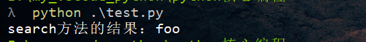
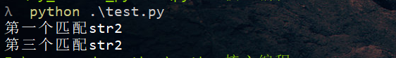

re模块的使用
re.match()
匹配字符串
re.search()
在一个字符串中查找模式
import re
m = re.match('foo', 'sstafood')
if m is not None:
print("match方法的结果：" + m.group())
n = re.search('foo', 'sstafood')
if n is not None:
print("search方法的结果：" + n.group())
可以看出match和search方法的区别
匹配多个字符串
import re
bt = 'str1|str2|str3'
m = re.match(bt, 'str2') #str2有匹配
if m is not None:
print("第一个匹配" + m.group())
m = re.match(bt, 'str') #没有匹配
if m is not None:
print("第二个匹配" + m.group())
m = re.search(bt, 'it is str2') #通过search搜索发现str2
if m is not None:
print("第三个匹配" + m.group())
I'm so cute. Please give me money.


- Post link: https://roboterh.github.io/2022/01/11/python%E6%A0%B8%E5%BF%83%E7%BC%96%E7%A8%8B%E8%AF%BB%E4%B9%A6%E7%AC%94%E8%AE%B0-%E4%B8%80/
- Copyright Notice: All articles in this blog are licensed under unless otherwise stated.